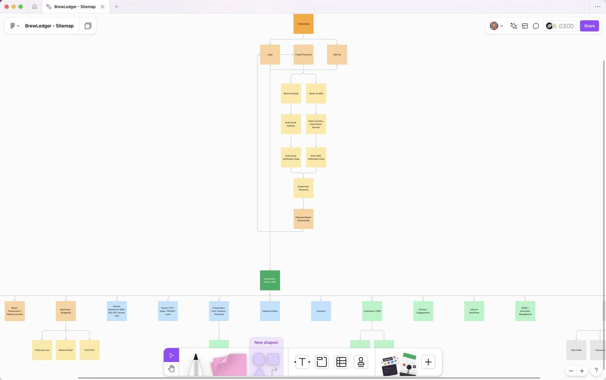
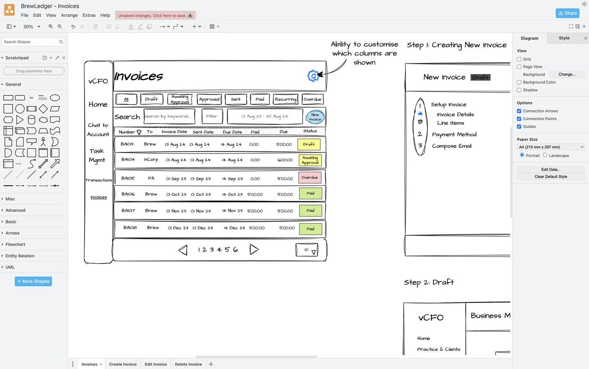
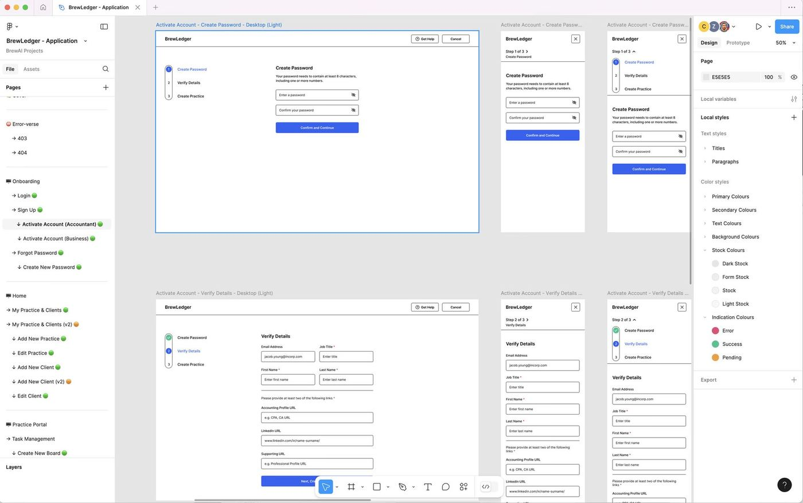
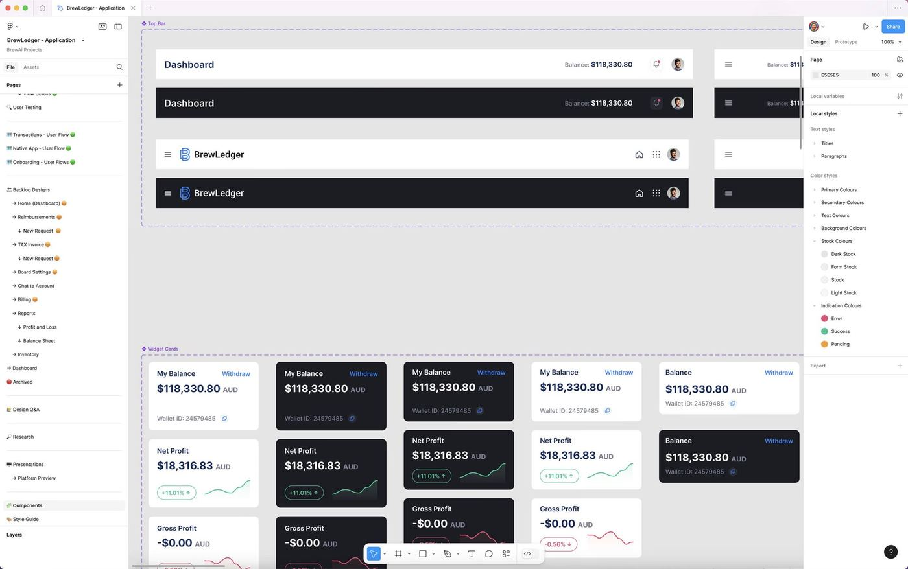
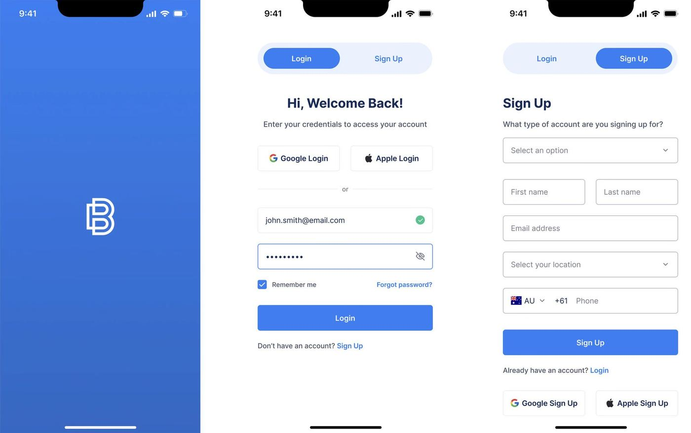
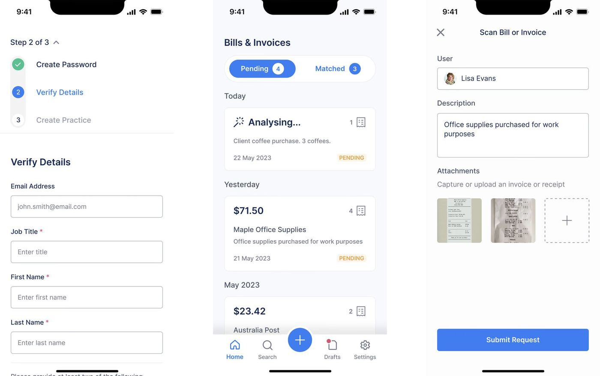
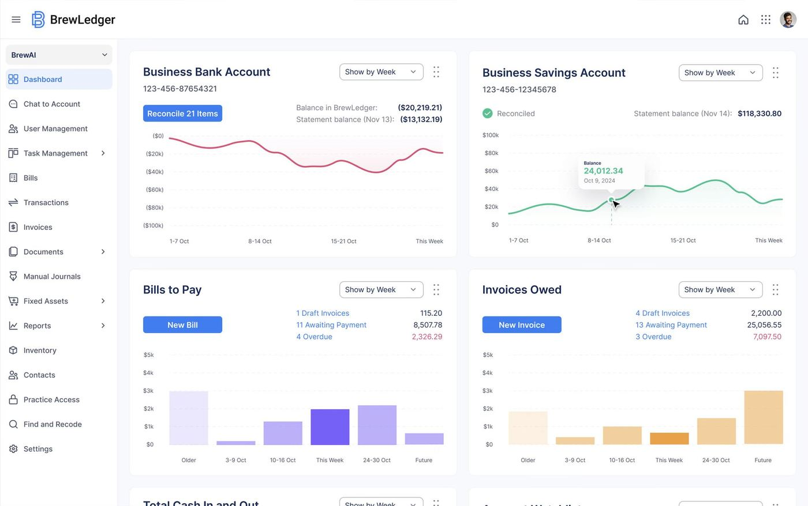
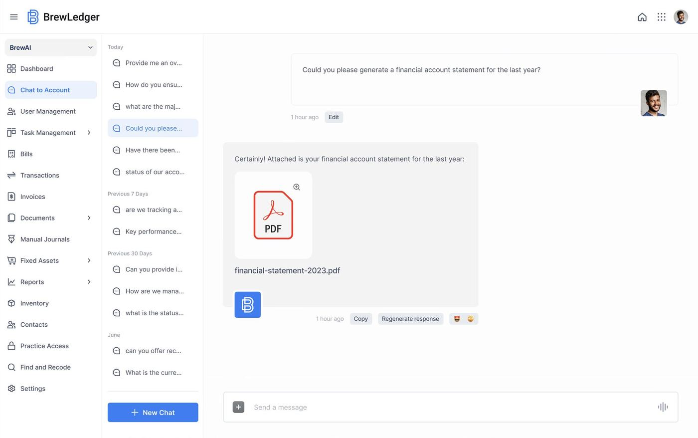
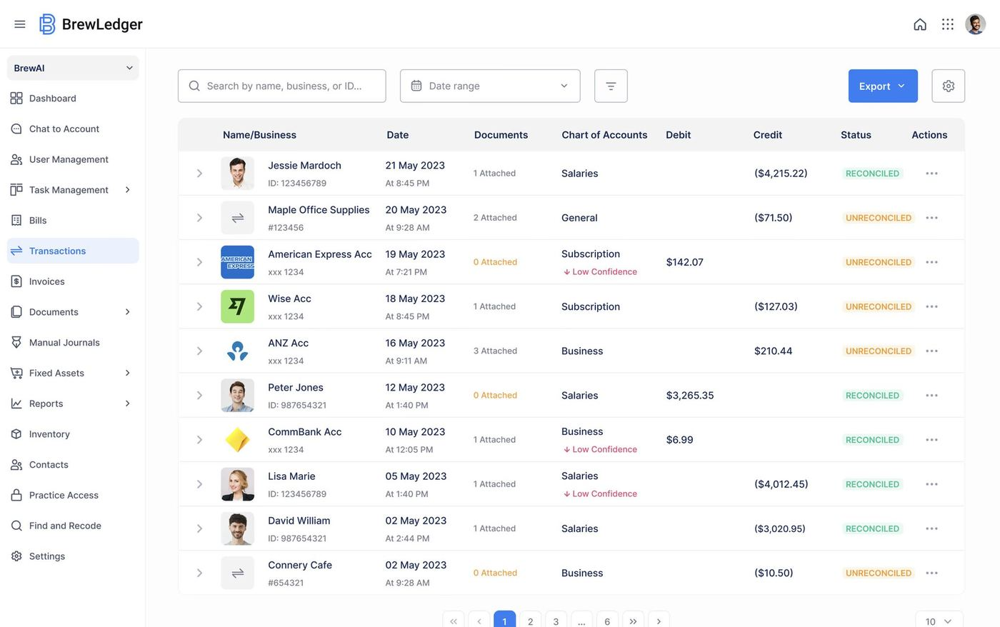
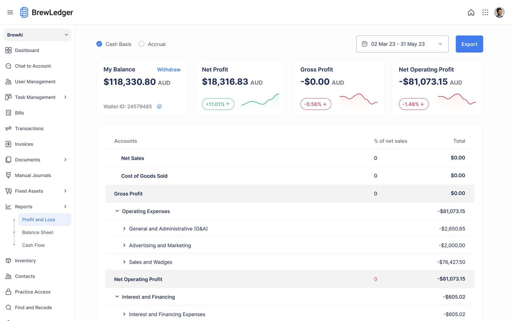

An AI-driven accounting platform built to give real-time clarity over your finances.
Client
BrewAI
Industry
FinTech
Model
SaaS
Date
Jun 2023 - Sep 2025
BrewLedger is an AI-powered bookkeeping and financial management platform built by BrewAI, designed for businesses in the US and Australian markets. Best described as Xero with AI built directly in, BrewLedger set out to eliminate the manual, time-consuming processes that dominate financial management for most businesses, receipt entry, expense categorisation, report generation, and replace them with intelligent automation that gets smarter the more you use it.
As with all BrewAI products, BrewLedger served a dual purpose: delivering genuine value to end users, from small business owners to accountants managing multiple clients, while also demonstrating BrewAI's capabilities to attract the investors and enterprise partners the startup needed to grow. This shaped the ambition of the product from the start: it needed to work well enough to impress users on the ground, and look credible enough to convince large corporations and investors that BrewAI was a serious player in the AI-powered FinTech space.
I joined BrewAI as its first designer and a member of the executive team. As the sole designer on BrewLedger, I was responsible for the full end-to-end design experience, from research and discovery through to high-fidelity UI across both desktop and mobile, working closely with a team of engineers and an AI specialist throughout.
 Live Preview
Live Preview
Most businesses find financial management platforms overwhelming. Complex interfaces, financial jargon, and a reliance on manual data entry make the day-to-day reality of bookkeeping far more time-consuming than it needs to be. Even with the automation tools available in existing platforms, users still spend significant time manually entering receipts, invoices, and expenses, and still end up relying on a financial analyst or accountant to interpret the data and produce meaningful reports.
Additional challenges included:
The opportunity was clear: build a platform that didn't just automate data entry, but genuinely replaced the work a financial analyst would otherwise do, and make it simple enough that any business owner could use it without a financial background.
The primary objective was to redefine financial management for small and medium businesses by building an intuitive, AI-powered platform that:

Sitemap of the user journey and flow.

Storyboards for desktop user flows.

Activate Account wireframes.

Design system components.
I designed BrewLedger end-to-end, starting from competitive research against established bookkeeping tools, primarily Xero and Finaloop, to identify where existing platforms fell short and where AI could meaningfully close those gaps rather than just automate existing processes.
A key part of the early research involved working with guidance from InCorp Global's accounting division, whose expertise helped shape the platform's approach to financial compliance across the US and Australian markets, where regulatory requirements differ in important ways.
My contributions included:
BrewLedger faced several distinct challenges that shaped the design throughout.
The financial industry itself was one of the first. Accounting and bookkeeping are deeply complex domains, and getting to grips with the terminology, workflows, and expectations of both business owners and professional accountants required real investment in research before a line of design could be drawn. The product needed to feel credible to financial professionals while remaining approachable for business owners with no accounting background, a balance that demanded constant calibration.
Adapting the platform for two distinct financial markets added a further layer of complexity. The US and Australia operate under meaningfully different financial regulations, tax structures, and accounting conventions, and within the US, rules varied further across individual states. The design had to accommodate those differences without fragmenting the experience or making either market's version feel like a workaround.
The most pervasive challenge was trust. Handing financial management, receipts, invoices, categorisation, reporting, to an AI system is a significant ask for most business owners and accountants. Designing an experience that felt confident and automated while also giving users enough visibility and control to trust it required deliberate decisions at every step. The correction-and-learning loop was one of the most important design solutions here: rather than just letting users override a wrong categorisation, I designed it so users could teach the system their preferences, making it feel collaborative rather than opaque.
Finally, there was the pressure of timing. BrewLedger was being built during the height of the AI hype cycle, when the window to go to market as a credible early mover was narrow. Moving quickly was essential, but not at the cost of the quality that would make the platform trustworthy to the investors and enterprise clients BrewAI needed to attract. Maintaining rigorous UX standards and design quality under that kind of speed pressure required being deliberate about where effort went and ruthless about what could wait for a later iteration.

Mobile designs for onboarding.

Mobile designs for bills and invoices.

Desktop design for home dashboard.

Desktop design for chat to account.

Desktop design for transactions.

Desktop design for profit and loss.
BrewLedger was in the early stages of release and funding during my time at BrewAI, with measurable results still emerging. However, the product generated growing interest across Australian, US, and Middle Eastern audiences, and plans for expansion into the UAE market reflected the platform's broader ambitions.
The product demonstrated strong demand from investors and potential users looking for AI-driven financial automation that went beyond what existing bookkeeping tools offered. The interest from the Middle East in particular opened a conversation about RTL and Arabic-language versions of the platform, which I also designed in response to that growing audience.
BrewLedger represented one of the most complex design challenges I've worked on, balancing financial compliance, AI trust, multi-market requirements, and genuine usability for non-technical users, all within a single, coherent product. The design thinking developed here, particularly around making AI outputs feel trustworthy and the correction-and-learning interaction model, informed how I approached similar trust challenges in BrewLegal. It also reinforced the value of grounding design decisions in real competitive research rather than designing in isolation, the benchmarking against Xero and Finaloop shaped almost every major design call throughout the project.
Here are a few other projects to explore.